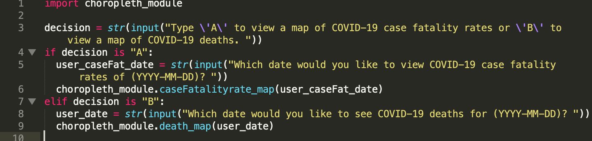

Covid-19 Deaths & Case Fatality Rates
We imported numpy,matplotlib,pandas,and plotly to start creating our maps and created a data frame to provide data for the maps.
We created another function called dfFormatter to help change the map according to what type it is.
Then 2 functions were created for each choropleth map

We then imported the module to the main file and created and if statement for the type of map and specific date to produce a map based on the user's input